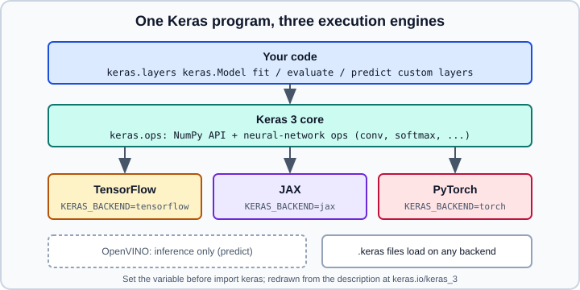

Keras Multi-Backend: JAX, PyTorch & keras.ops
|
This content was generated with the assistance of AI and should be verified against the official documentation before being relied on in production. |
Keras 3 is again a multi-framework library: the same layers, models, losses, optimizers and fit() run on top of TensorFlow, JAX or PyTorch, and the choice of backend is a runtime setting rather than a code change. This page explains how the backend is selected, how to write components that work on every backend with keras.ops, how the custom-loop recipe changes per backend, how Keras and native framework code can be mixed, and how Keras models plug into scikit-learn through keras.wrappers. The overall picture of the packages (keras, tf.keras, tf_keras) is on Keras 3 Overview; breaking changes from Keras 2 are on Migrating from Keras 2 to Keras 3; the TensorFlow-flavoured custom loop is on Writing a Training Loop from Scratch.
It targets Python 3.13 and TensorFlow 2.21 with Keras 3.15 (TensorFlow 2.22 is upcoming), plus PyTorch 2.15 and scikit-learn 1.9 where mentioned, and was checked against the official documentation on 2026-10-30. Examples were run on Python 3.13 with TensorFlow 2.21, Keras 3.15, JAX 0.12 and PyTorch 2.15 (CPU) on 2026-10-31, each backend-specific example in its own process with the backend it selects. Snippets that use names such as train_ds and train_loader defined elsewhere were run with small synthetic stand-ins. For the framework-level comparison see Choosing a Framework; the native PyTorch material is under nn.Module and torch.compile.

The figure is an original drawing based on the description at https://keras.io/keras_3/.
Which backends exist
| Backend | Training | Notes |
|---|---|---|
TensorFlow |
Yes |
The historical backend and the default when TensorFlow is installed. Gives |
JAX |
Yes |
Functional, XLA-compiled. Usually the fastest backend on TPU and a good fit for large-scale training. Requires the stateless calling convention in hand-written loops. |
PyTorch |
Yes |
Keras layers become |
OpenVINO |
No |
Inference only: it supports |
There is also a minimal numpy backend (KERAS_BACKEND=numpy): in Keras 3.15 it runs predict(), but fit() raises NotImplementedError: fit not implemented for NumPy backend, so do not plan on training with it. Keras 3 also no longer ships a separate Theano or CNTK backend; those belong to the old Keras 1 and Keras 2 history that older tutorials describe.
Selecting a backend
There are two supported mechanisms, and the environment variable wins over the file:
-
The
KERAS_BACKENDenvironment variable. -
The
"backend"key of the configuration file~/.keras/keras.json.
The variable must be set before Keras is imported, because the backend is bound at import time. Changing os.environ after import keras has no effect.
import os
os.environ["KERAS_BACKEND"] = "jax" # "tensorflow", "jax", "torch" (or "openvino" for inference)
import keras
print(keras.config.backend()) # jax
print(keras.__version__)Source: https://keras.io/keras_3/
The same setting from a shell, which is the more robust option for scripts and CI because no code depends on import order:
KERAS_BACKEND=torch python train.py
cat ~/.keras/keras.json # {"backend": "tensorflow", ...} on a default installSource: https://keras.io/keras_3/
Practical notes:
-
Install the framework you select; Keras does not install it for you. Wheels exist on PyPI for each (
pip install keras jax torch tensorflow), but GPU builds need the extras documented by each project; see Installation and PyTorch installation. -
A process uses exactly one backend. To compare backends run separate processes.
-
The backend is a global switch; library code should not set it, applications should.
-
keras.config.backend()(and the equivalentkeras.backend.backend()) reports the active choice, which is the quickest way to debug "why is it running on TensorFlow?" problems.
Writing portable code with keras.ops
keras.ops is the backend-neutral namespace. It contains a complete implementation of the NumPy API (ops.matmul, ops.sum, ops.stack, ops.einsum) and the neural-network functions that NumPy lacks (ops.softmax, ops.conv, ops.binary_crossentropy, ops.one_hot). Its submodules are keras.ops.numpy, keras.ops.nn, keras.ops.linalg, keras.ops.image, keras.ops.fft and related ones; most functions are also re-exported at the top level.
import keras
from keras import ops
class ScaledDotProduct(keras.layers.Layer):
"""Attention scores that run unchanged on TensorFlow, JAX and PyTorch."""
def call(self, q, k, v):
d = ops.cast(ops.shape(q)[-1], q.dtype)
scores = ops.matmul(q, ops.transpose(k, (0, 2, 1))) / ops.sqrt(d)
weights = ops.softmax(scores, axis=-1)
return ops.matmul(weights, v)
class MeanSquaredLog(keras.losses.Loss):
def call(self, y_true, y_pred):
diff = ops.log1p(ops.maximum(y_pred, 0.0)) - ops.log1p(ops.maximum(y_true, 0.0))
return ops.mean(ops.square(diff), axis=-1)
x = ops.convert_to_tensor([[1.0, 2.0], [3.0, 4.0]]) # backend tensor
print(ops.sum(x), ops.shape(x))Source: https://keras.io/api/ops/ and https://keras.io/keras_3/
Rules that keep a component portable:
-
Use
keras.opsfor every tensor operation insidecall. Atf.reduce_sumthere ties the layer to TensorFlow; atorch.sumties it to PyTorch. -
Do not mix in NumPy for values that depend on tensors; NumPy cannot trace through JAX
jitor a TensorFlow graph. -
Use
ops.cond,ops.scan,ops.while_loop,ops.fori_loopandops.vectorized_mapinstead of Python control flow on tensor values, so that compilation works on every backend. Plain Pythonifis fine for static values such as a layer argument or a known shape. -
Shapes inside compiled functions can be partially unknown. Use
ops.shape(x)rather thanx.shapewhen a dimension may be dynamic. -
Randomness: use
keras.random(for examplekeras.random.normalwith akeras.random.SeedGenerator) instead oftf.randomortorch.manual_seed-style APIs. Outputs are deterministic within one backend, but initialisers and dropout masks differ between backends even with the same seed, so do not expect bit-identical training across them. -
Numerics agree to roughly 1e-7 per float32 operation; small differences accumulate over long runs, so compare metrics rather than exact weights.
Keras 3 can also run keras.ops code in the backend-neutral way outside layers, which makes it a reasonable place for shared maths (metrics, post-processing) that must work in training and in inference. If you need an operation that keras.ops lacks, you can write backend-specific branches on keras.config.backend(), at the cost of portability.
A backend-neutral model and fit()
High-level code does not mention the backend at all:
import os
os.environ.setdefault("KERAS_BACKEND", "jax")
import keras
import numpy as np
x = np.random.rand(1000, 20).astype("float32")
y = (x.sum(axis=1) > 10).astype("float32")
model = keras.Sequential([
keras.Input(shape=(20,)),
keras.layers.Dense(32, activation="relu"),
keras.layers.Dense(1, activation="sigmoid"),
])
model.compile(optimizer="adam", loss="binary_crossentropy", metrics=["accuracy"])
model.fit(x, y, epochs=3, batch_size=64, validation_split=0.2)
model.save("model.keras") # contains no backend specialisationSource: https://keras.io/keras_3/
fit(), evaluate() and predict() accept NumPy arrays, pandas DataFrames, keras.utils.PyDataset objects, tf.data.Dataset objects and torch.utils.data.DataLoader objects regardless of backend, so you can train a PyTorch-backed Keras model on a tf.data pipeline and vice versa. The exception is using Keras layers inside a tf.data.Dataset.map on a non-TensorFlow backend: arbitrary layers cannot run there, although several preprocessing layers (for example IntegerLookup and CategoryEncoding) are designed to work. See Keras Preprocessing Layers and tf.data.
Saved .keras files carry no backend-specific content, so a model trained on JAX can be reloaded under PyTorch, provided its custom components use keras.ops. Details of the format are on Saving Keras Models. SavedModel export, in contrast, is a TensorFlow-backend feature; see SavedModel and Signatures.
Compilation: compile() has a jit_compile option (the default is documented as automatic). On the JAX and TensorFlow backends Keras can compile the training step with XLA when it considers the model suitable; on the PyTorch backend jit_compile="auto" means eager execution and jit_compile=True runs the step through torch.compile with the "inductor" backend. Treat compilation as an optimisation to measure, as discussed in Performance, XLA and Profiling.
Custom training loops per backend
The idea of a loop is the same everywhere (forward, loss, gradients, optimizer update, metrics), but how gradients are computed and where state lives differs. The TensorFlow version uses tf.GradientTape (see the custom training loop page). The other two follow.
JAX: stateless functions
JAX transforms pure functions, so the model, optimizer and metric state are passed in and returned explicitly. Keras provides model.stateless_call, optimizer.stateless_apply and, for metrics, stateless_update_state and stateless_result. All variables must be built before the first jitted call: build the model by calling it or giving it an Input, and call optimizer.build(model.trainable_variables).
import os
os.environ["KERAS_BACKEND"] = "jax"
import jax
import keras
model = keras.Sequential([
keras.Input(shape=(784,)),
keras.layers.Dense(128, activation="relu"),
keras.layers.Dense(10),
])
loss_fn = keras.losses.SparseCategoricalCrossentropy(from_logits=True)
optimizer = keras.optimizers.Adam(1e-3)
optimizer.build(model.trainable_variables)
def compute_loss(trainable_variables, non_trainable_variables, x, y):
y_pred, non_trainable_variables = model.stateless_call(
trainable_variables, non_trainable_variables, x, training=True
)
return loss_fn(y, y_pred), non_trainable_variables
grad_fn = jax.value_and_grad(compute_loss, has_aux=True)
@jax.jit
def train_step(state, x, y):
trainable, non_trainable, opt_vars = state
(loss, non_trainable), grads = grad_fn(trainable, non_trainable, x, y)
trainable, opt_vars = optimizer.stateless_apply(opt_vars, grads, trainable)
return loss, (trainable, non_trainable, opt_vars)
state = ( # plain arrays: jax.jit does not accept Keras Variable objects
[v.value for v in model.trainable_variables],
[v.value for v in model.non_trainable_variables],
[v.value for v in optimizer.variables],
)
for step, (x_batch, y_batch) in enumerate(train_ds): # any iterable of NumPy batches
loss, state = train_step(state, x_batch, y_batch)
# The loop never touched the model objects: write the new values back before saving.
trainable, non_trainable, _ = state
for var, value in zip(model.trainable_variables, trainable):
var.assign(value)
for var, value in zip(model.non_trainable_variables, non_trainable):
var.assign(value)Pitfalls: the loss must be the first output of a function used with has_aux=True; tensors coming from a tf.data pipeline should be converted to NumPy arrays before entering the jitted function; and forgetting the write-back means the Keras model still holds its initial weights. For the model-parallel side of JAX see the note on keras.distribution below.
PyTorch: autograd on Keras variables
With the torch backend a Keras layer is a torch.nn.Module and its variables hold torch tensors, so the native autograd machinery applies. The differences from a pure PyTorch loop are small: gradients are read from each Keras variable through .value.grad, and the update is optimizer.apply inside torch.no_grad().
import os
os.environ["KERAS_BACKEND"] = "torch"
import torch
import keras
model = keras.Sequential([
keras.Input(shape=(784,)),
keras.layers.Dense(128, activation="relu"),
keras.layers.Dense(10),
])
loss_fn = keras.losses.SparseCategoricalCrossentropy(from_logits=True)
optimizer = keras.optimizers.Adam(1e-3)
for epoch in range(2):
for x_batch, y_batch in train_loader: # a torch.utils.data.DataLoader
logits = model(x_batch, training=True)
loss = loss_fn(y_batch, logits) # Keras order is (y_true, y_pred)
model.zero_grad()
trainable = [v for v in model.trainable_weights]
loss.backward()
grads = [v.value.grad for v in trainable]
with torch.no_grad():
optimizer.apply(grads, trainable)Keras losses take (y_true, y_pred) while torch.nn losses take (input, target), which is the most common transposition bug when mixing them. The native PyTorch equivalent is on the PyTorch training loop page.
Choosing between the three
| TensorFlow | JAX | PyTorch | |
|---|---|---|---|
Gradients |
|
|
|
Model state |
Mutated in place |
Passed in and returned ( |
Mutated in place |
Optimizer update |
|
|
|
Compilation |
|
|
|
Mixing Keras and native frameworks
Because Keras 3 sits on top of the framework it can interoperate with native code in each direction:
-
On the PyTorch backend a Keras
LayerorModelis atorch.nn.Module: it can be placed inside a nativenn.Sequential, optimized withtorch.optim, or wrapped for distributed training. -
A PyTorch
nn.Modulecan be used as a layer inside a Keras model throughkeras.layers.TorchModuleWrapper. -
On the JAX backend,
keras.layers.JaxLayerandkeras.layers.FlaxLayerwrap a JAX function or a Flax module as a Keras layer. -
A TensorFlow SavedModel can be consumed as a layer through
keras.layers.TFSMLayer(inference only), which helps when migrating old exported models; see Migrating from Keras 2 to Keras 3.
In Keras 3.15 their constructors are TorchModuleWrapper(module, name=None, output_shape=None), JaxLayer(call_fn, init_fn=None, params=None, state=None, seed=None, ...), FlaxLayer(module, method=None, variables=None) and TFSMLayer(filepath, call_endpoint="serve", call_training_endpoint=None, trainable=True, name=None, dtype=None); see https://keras.io/api/layers/backend_specific_layers/ for the full argument descriptions.
Distribution across devices
keras.distribution offers a backend-neutral API with DeviceMesh, DataParallel and ModelParallel. The Keras documentation states that, for now, it is implemented for the JAX backend only. On the other backends use the framework mechanisms: tf.distribute strategies for TensorFlow (see Distributed Training) and DistributedDataParallel for PyTorch (see DistributedDataParallel). Data parallelism with the usual fit() call works on all three backends.
Things that differ between backends
-
Pooling: average pooling with
padding="same"can differ at borders on PyTorch, because PyTorch lacks asymmetric padding for that operation. -
Random initialisation and dropout streams differ across backends even with the same seed.
-
Since TensorFlow 2.16,
tf.kerasis Keras 3 (the samekeraspackage). Only the separatetf_keraspackage, selected by settingTF_USE_LEGACY_KERAS=1before TensorFlow is imported, is Keras 2, andtf_kerasand Keras 3 cannot be mixed in one process: they are different packages with different engines, and a model built with one cannot be passed to the other. Legacy models saved in the.kerasv3 format generally load under Keras 3 on the TensorFlow backend, and models using only built-in layers can also run on JAX and PyTorch. -
SavedModel export,
tf.datalayer mapping and TF Serving remain TensorFlow-backend features; ONNX, ExecuTorch or other exports go through the framework chosen. See ONNX and Interoperability and Deploying and Serving Models.
Keras models as scikit-learn estimators
Keras 3 ships its own scikit-learn adapters in keras.wrappers: SKLearnClassifier, SKLearnRegressor and SKLearnTransformer. They replace the third-party SciKeras package for new code (SciKeras is archived and belongs to the Keras 2 era). All three share one signature, (model, warm_start=False, model_kwargs=None, fit_kwargs=None):
-
modelis a compiled Keras model, or a callable that builds one. A callable must accept at leastXandyas keyword arguments; extra arguments come frommodel_kwargs. -
With
warm_start=Falsea model instance is cloned (keras.models.clone_model) before every fit; withTruethe same model is reused and weights carry over between fits. A callable builds a fresh model each time, which avoids the question. -
fit_kwargsare forwarded tomodel.fit; values given directly to the estimatorfittake precedence. In Keras 3.15.1 the wrapper’s__sklearn_clone__does not copyfit_kwargs, so every clone made bysklearn.base.clone(ascross_val_score,GridSearchCVand other meta-estimators do) trains with thefit()defaults: one epoch and a progress bar. Pass the options again as fit parameters, as in the example below. -
Fitted attributes are
model_(all three),history_(classifier and transformer) andclasses_(classifier only).
from keras import layers, models
from keras.wrappers import SKLearnClassifier
from sklearn.datasets import make_classification
from sklearn.model_selection import cross_val_score
from sklearn.preprocessing import StandardScaler
from sklearn.pipeline import make_pipeline
def build(X, y, units=32):
n_classes = y.shape[1] if y.ndim > 1 else 1 # the wrapper one-hot encodes y before calling the builder
inp = layers.Input(shape=(X.shape[1],))
h = layers.Dense(units, activation="relu")(inp)
out = layers.Dense(n_classes, activation="softmax")(h)
m = models.Model(inp, out)
m.compile(loss="categorical_crossentropy", optimizer="adam", metrics=["accuracy"])
return m
X, y = make_classification(n_samples=600, n_features=12, n_informative=6, random_state=0)
est = SKLearnClassifier(model=build, model_kwargs={"units": 64}, fit_kwargs={"epochs": 5, "verbose": 0})
pipe = make_pipeline(StandardScaler(), est)
# cross_val_score clones the estimator, and the clone loses fit_kwargs in Keras 3.15.1,
# so pass the fit options again as fit parameters of the pipeline step
fit_params = {"sklearnclassifier__epochs": 5, "sklearnclassifier__verbose": 0}
print(cross_val_score(pipe, X, y, cv=3, params=fit_params).mean()) # between 0.72 and 0.79 over several runsThe model must be compiled before it is wrapped (or inside the callable, as above). Training is not deterministic unless you control randomness, so cross-validation scores vary run to run. The documentation’s example of freezing a pretrained embedding model in a pipeline uses sklearn.frozen.FrozenEstimator, which needs scikit-learn 1.6 or later. For the scikit-learn side, including skorch for PyTorch, see Using scikit-learn with PyTorch and Keras, and the pipeline and search material in scikit-learn pipelines. Hyperparameter search over Keras models is also covered by KerasTuner.
Outdated claims worth discarding
| Old statement | Current situation (Keras 3.15) |
|---|---|
"Keras is a front end for TensorFlow, Theano or CNTK" |
That was Keras 1 and 2. Keras 3 supports TensorFlow, JAX and PyTorch (plus OpenVINO for inference). |
“ |
With Keras 3 install and import |
"Use |
Use |
References
-
Keras 3: A new multi-backend Keras - https://keras.io/keras_3/
-
Keras API: Ops - https://keras.io/api/ops/
-
Keras guide: Writing a training loop from scratch in JAX - https://keras.io/guides/writing_a_custom_training_loop_in_jax/
-
Keras guide: Writing a training loop from scratch in PyTorch - https://keras.io/guides/writing_a_custom_training_loop_in_torch/
-
Keras guide: Distributed training with the Keras distribution API - https://keras.io/guides/distribution/
-
Keras API: Scikit-Learn API wrappers - https://keras.io/api/utils/sklearn_wrappers/
-
Keras API: Backend-specific layers - https://keras.io/api/layers/backend_specific_layers/
-
Keras getting started - https://keras.io/getting_started/